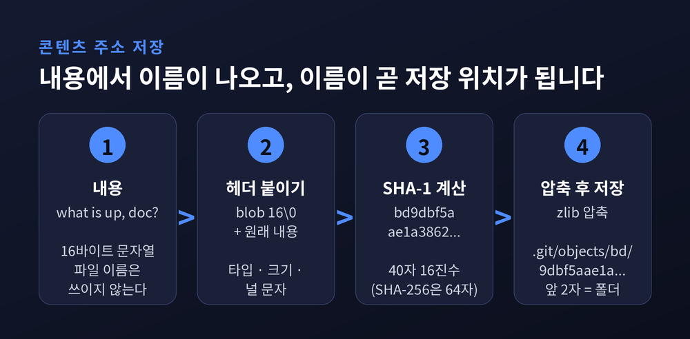
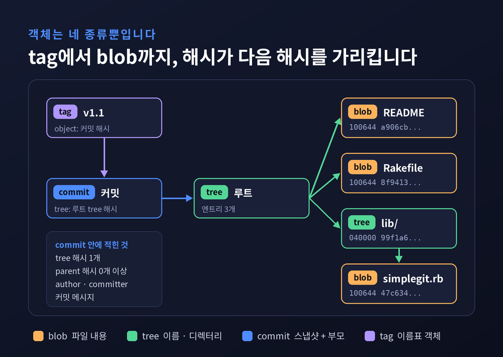
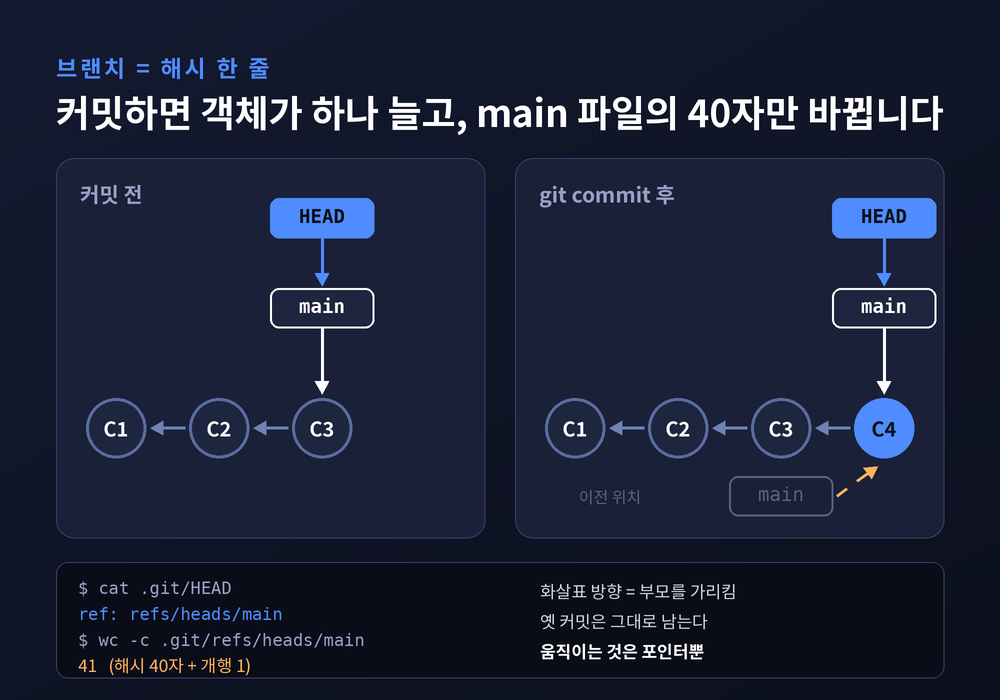
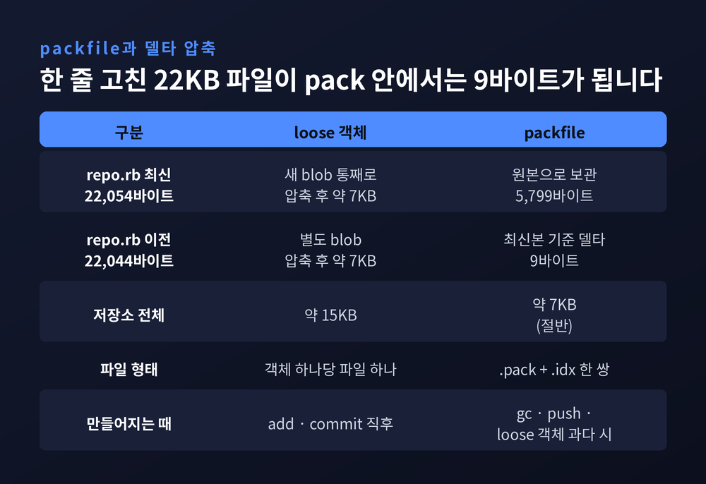
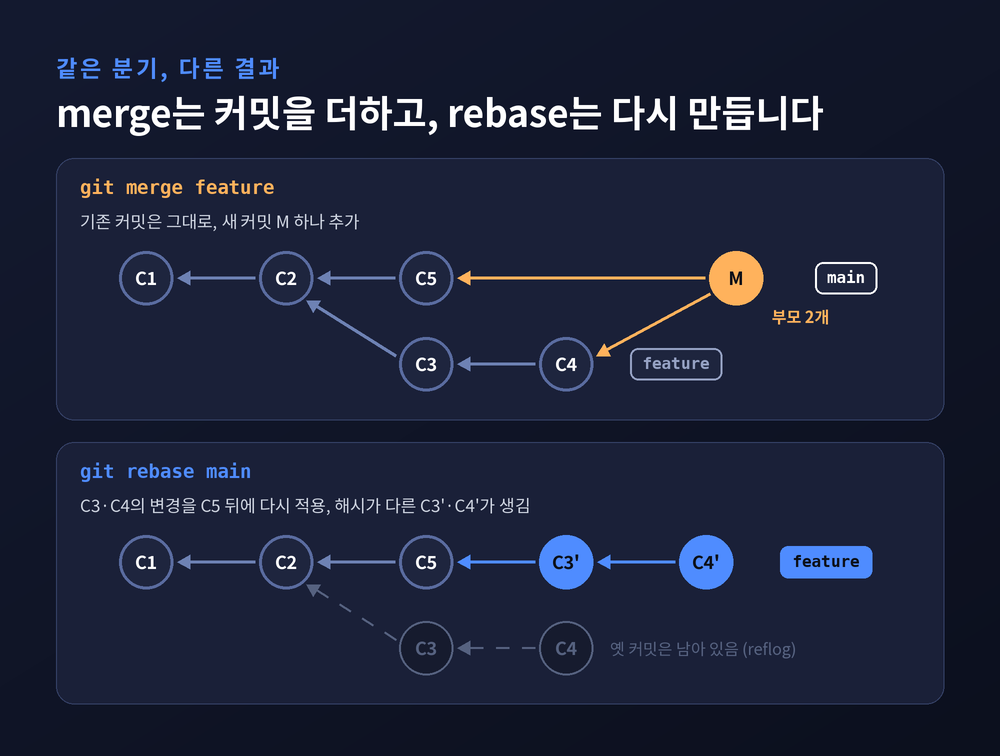

Git 내부 구조 — 커밋이 스냅샷이고 브랜치가 포인터인 이유
이번 글에서는 Git 내부 구조를 .git 폴더 안쪽에서부터 따라가 보겠습니다. 커밋이 변경분이 아니라 스냅샷이라는 말, 브랜치가 포인터에 불과하다는 말이 실제로 어떤 파일과 바이트로 구현되는지가 주제입니다. merge와 rebase가 무엇을 새로 만들고 무엇을 옮기는지도 같은 틀로 설명됩니다.

세 줄 요약
- Git의 바닥은 내용의 해시를 이름으로 쓰는 키-값 저장소입니다. 객체는 blob·tree·commit·tag 네 종류뿐입니다.
- 커밋은 프로젝트 전체의 루트 tree를 가리키는 스냅샷입니다. diff는 저장되지 않고, 볼 때마다 두 tree를 비교해 계산됩니다.
- 브랜치는 커밋 해시 하나를 적어 둔 41바이트 파일입니다. merge·rebase는 새 객체를 만든 뒤 이 포인터를 옮기는 일입니다.
이름이 곧 내용인 저장소
Pro Git은 Git을 한 문장으로 정의합니다. "콘텐츠 주소 파일시스템"이라는 것입니다.
어떤 데이터를 넣으면 Git이 키를 돌려주고, 나중에 그 키로 데이터를 꺼냅니다.
그 키가 바로 데이터의 해시입니다.
직접 확인할 수 있습니다.echo 'test content' | git hash-object -w --stdin을 실행하면 d670460b4b4aece5915caf5c68d12f560a9fe3e4라는 40자가 나옵니다.
이 값은 .git/objects/d6/70460b... 경로에 파일로 저장됩니다.
앞 두 글자가 디렉터리 이름, 나머지 38글자가 파일 이름입니다.
해시하는 대상은 내용만이 아닙니다.
Git은 먼저 헤더를 붙입니다. 객체 타입, 공백, 바이트 크기, 그리고 널 문자 하나입니다.
"what is up, doc?"이라는 16바이트 문자열이라면 blob 16\0what is up, doc?이 실제 해시 입력이 됩니다.
그 뒤 zlib으로 압축해 디스크에 기록합니다.
이 구조에서 두 가지 성질이 저절로 따라옵니다.
같은 내용은 몇 번을 넣어도 같은 이름을 얻으므로 한 번만 저장됩니다.
반대로 1비트만 달라져도 이름이 완전히 바뀝니다.
저장과 무결성 검사가 같은 장치로 해결되는 셈입니다.

blob, tree, commit, tag — 객체는 네 가지뿐
blob은 파일의 내용만 담습니다.
눈여겨볼 점은 파일 이름이 없다는 것입니다.README와 LICENSE의 내용이 같다면 blob은 하나만 존재합니다.
tree가 이름을 맡습니다.
tree의 한 줄은 모드, 타입, 해시, 파일명으로 이뤄집니다.100644 blob a906cb... README, 040000 tree 99f1a6... lib 같은 형태입니다.
하위 디렉터리는 또 다른 tree를 가리킵니다. 유닉스로 치면 tree는 디렉터리 엔트리, blob은 파일 내용에 해당합니다.
파일 모드도 단순합니다. 일반 파일 100644, 실행 파일 100755, 심볼릭 링크 120000 세 가지만 유효합니다.
commit은 짧은 텍스트입니다.
최상위 tree 하나, 부모 커밋 목록, 작성자와 커미터 정보, 빈 줄, 메시지가 전부입니다.
부모가 없으면 첫 커밋이고, 부모가 둘 이상이면 merge 커밋입니다.
tag(annotated tag)는 commit과 닮았습니다.
태거, 날짜, 메시지, 그리고 가리키는 대상 하나를 가집니다.
대상은 보통 커밋이지만 꼭 그럴 필요는 없습니다. Git 프로젝트 유지보수자는 자신의 GPG 공개키를 blob으로 넣고 거기에 태그를 붙여 두었습니다.
반면 git tag v1.0처럼 만드는 lightweight tag는 객체가 아닙니다. 움직이지 않는 ref 파일 하나일 뿐입니다.
Pro Git의 예제 저장소는 blob 4개, tree 3개, commit 3개, tag 1개로 객체 11개를 만듭니다.
압축 후 합계는 925바이트에 불과합니다.
버전 관리 시스템 하나가 이 네 가지 재료로 조립된다는 사실이 다소 놀랍습니다.

커밋이 diff가 아니라 스냅샷인 이유
많은 사람이 커밋을 "이번에 바뀐 부분"으로 이해합니다.
GitHub의 Derrick Stolee는 2020년 글에서 이 해석을 Git 혼란의 근본 원인으로 지목했습니다.
그의 결론은 짧습니다. 커밋은 diff가 아니라 스냅샷입니다.
커밋 객체를 열어 보면 이유가 분명합니다.
그 안에는 변경 내역이 아니라 루트 tree의 해시가 있습니다.
루트 tree를 따라 내려가면 그 시점 작업 디렉터리 전체가 복원됩니다.
그렇다면 커밋마다 프로젝트를 통째로 복사하는 것일까요.
그렇지 않습니다.
바뀌지 않은 파일은 같은 blob을, 바뀌지 않은 디렉터리는 같은 tree를 그대로 가리킵니다.
파일 하나를 고치면 그 blob과 경로 위의 tree 몇 개, 그리고 커밋 하나만 새로 생깁니다.
이렇게 해시로 서로를 가리키는 구조가 머클 트리입니다. 일반론은 이전 글에서 다뤘으니 여기서는 넘어가겠습니다.
git show나 GitHub 화면에서 보는 diff는 저장된 것이 아닙니다.
두 커밋의 루트 tree를 비교해 그때그때 계산한 결과입니다.
그래서 인접하지 않은 아무 두 커밋 사이의 diff도 똑같이 뽑을 수 있습니다.
브랜치는 41바이트짜리 파일이다
커밋 해시를 외워 다닐 수는 없습니다.
그래서 Git은 해시에 이름을 붙이는 ref를 둡니다..git/refs/heads, .git/refs/tags, .git/refs/remotes 아래의 파일들입니다.
Pro Git은 브랜치를 작업 라인의 끝을 가리키는 단순한 포인터라고 부릅니다.
브랜치 파일 안에는 커밋 해시 40자와 개행 문자 하나가 들어 있습니다.
새 브랜치를 만드는 일은 41바이트를 파일에 쓰는 일과 같습니다.
브랜치를 백 개 만들어도 부담이 없는 까닭입니다.
HEAD는 한 단계 더 간접적입니다..git/HEAD를 열면 보통 ref: refs/heads/main 한 줄이 있습니다.
커밋이 아니라 브랜치를 가리키는 심볼릭 참조입니다.
태그나 특정 커밋을 체크아웃하면 HEAD에 해시가 직접 적힙니다. 이것이 detached HEAD 상태입니다.
git commit의 마지막 동작도 여기서 이해됩니다.
Git은 HEAD가 가리키는 브랜치의 현재 커밋을 부모로 삼아 새 커밋 객체를 만듭니다.
그다음 브랜치 파일의 40자를 새 해시로 덮어씁니다.
객체는 추가만 될 뿐 고쳐지지 않고, 움직이는 것은 포인터뿐입니다.

스테이징 영역은 다음 tree의 초안이다
git add와 git commit 사이에는 인덱스가 있습니다.
실체는 .git/index라는 바이너리 파일 하나입니다.
첫 4바이트는 "DIRC"로, DirCache의 약자입니다. 그 뒤로 버전과 엔트리 개수가 옵니다.
각 엔트리에는 경로와 blob 해시, 그리고 ctime·mtime·inode·크기 같은 파일 시스템 stat 정보가 함께 들어 있습니다.
stat 정보를 캐시해 두면 파일 내용을 매번 다시 해시하지 않고도 변경 여부를 가늠할 수 있습니다.
git add는 파일 내용을 blob으로 저장하고 인덱스의 해당 줄을 갱신합니다.git commit은 인덱스를 그대로 tree 객체들로 굳힙니다. 저수준 명령으로는 git write-tree입니다.
그러니 스테이징 영역은 "다음 커밋이 될 스냅샷의 초안"이라고 이해하면 정확합니다.
packfile — 논리는 스냅샷, 저장은 델타
스냅샷 모델에는 분명한 비용이 있습니다.
Pro Git의 실험이 그것을 보여 줍니다.
22,044바이트짜리 소스 파일 끝에 한 줄을 붙이자 22,054바이트짜리 새 blob이 통째로 생겼습니다.
압축해도 각각 약 7KB로, 거의 같은 데이터가 두 벌 존재합니다.
Git은 이 낭비를 저장 계층에서 해결합니다.
처음에는 객체 하나당 파일 하나인 loose 객체로 저장합니다.
loose 객체가 많아지거나, git gc를 실행하거나, 원격으로 push할 때 여러 객체를 packfile 하나로 묶습니다..pack 파일에는 객체들이, .idx 파일에는 빠른 탐색을 위한 오프셋이 들어갑니다.
묶는 과정에서 델타 압축이 일어납니다.
이름과 크기가 비슷한 객체끼리 비교해 한쪽을 차이만으로 저장합니다.
앞의 실험에서 최신 버전은 5,799바이트로 압축된 원본이 되었고, 옛 버전은 단 9바이트짜리 델타가 되었습니다.
전체 용량은 약 15KB에서 7KB로 절반이 되었습니다.
흥미로운 점은 방향입니다.
자주 꺼내 볼 최신 버전을 온전히 두고, 과거 버전을 델타로 만듭니다.git pack-objects는 기본적으로 주변 10개 객체와 비교하고(--window), 델타가 50단계 넘게 이어지지 않게 합니다(--depth).
체인이 깊을수록 복원할 때 델타를 여러 번 적용해야 해 느려지기 때문입니다.
예전에는 "스냅샷이면 용량이 폭발하지 않나" 하는 의문이 자연스러웠습니다.
지금 보면 답은 층의 분리에 있습니다.
객체의 이름과 의미는 스냅샷 기준으로 정해지고, 디스크에 어떻게 놓일지는 따로 최적화됩니다.
델타는 해시에 영향을 주지 않으므로 언제든 다시 pack할 수 있습니다.

merge와 rebase는 그래프에서 무엇을 하는가
두 명령 모두 결국 새 객체를 만들고 포인터를 옮깁니다.
차이는 만들어지는 객체의 모양입니다.
fast-forward가 가장 단순합니다.
갈라진 적이 없다면 새 커밋을 만들 필요가 없습니다. 브랜치 포인터만 앞으로 밀면 끝입니다.
갈라졌다면 3-way merge가 필요합니다.
Git은 두 브랜치의 끝 커밋과 둘의 가장 가까운 공통 조상, 이렇게 세 스냅샷을 비교합니다.
그 결과로 새 tree를 만들고, 부모가 둘인 merge 커밋을 하나 만듭니다.
첫째 부모는 merge 전 현재 브랜치 커밋, 둘째 부모는 합쳐 들어온 브랜치 커밋입니다.
기존 커밋은 하나도 바뀌지 않습니다.
rebase는 다른 길을 갑니다.
공통 조상 이후 내 커밋들이 만든 변경을 하나씩 계산해 둡니다.
그리고 대상 브랜치 끝에서 그 변경을 차례로 다시 적용합니다.
부모가 바뀌고 커미터 시각도 바뀌므로 해시가 전혀 다른 새 커밋이 생깁니다.
Git에 작성자와 커미터가 따로 기록되는 이유가 여기 있습니다.
rebase 뒤에 "커밋이 사라졌다"며 당황하는 경우가 흔합니다.
실제로는 옛 커밋 객체가 그대로 남아 있고, 브랜치 포인터만 새 커밋으로 옮겨 간 것입니다.
reflog에는 기본 90일, 현재 브랜치에서 도달할 수 없는 항목은 30일 동안 기록이 남습니다.
참조가 끊긴 loose 객체도 기본 2주가 지나야 정리 대상이 됩니다.
좋은 점과 한계는 함께 봐야 합니다.
merge는 역사를 있는 그대로 보존하지만 그래프가 복잡해집니다.
rebase는 일직선의 깔끔한 역사를 주지만, 이미 공유한 커밋을 새 해시로 바꾸면 다른 사람의 저장소와 어긋납니다.

SHA-1에서 SHA-256으로 가는 중입니다
콘텐츠 주소 저장은 해시 함수를 믿어야 성립합니다.
그 신뢰가 흔들린 것이 2017년 2월입니다.
CWI와 Google이 SHAttered를 발표해 서로 다른 두 PDF가 같은 SHA-1 값을 갖게 만들었습니다.
연산량은 CPU 약 6,500년, GPU 100여 년 규모였습니다. 발표문은 Git 저장소를 영향 대상 중 하나로 꼽았습니다.
Git은 같은 해 2.13.0부터 Marc Stevens와 Dan Shumow의 충돌 탐지 코드를 기본으로 넣었습니다.
알려진 방식의 충돌 공격 흔적이 보이면 에러를 냅니다.
2020년 2.29에서는 git init --object-format=sha256으로 SHA-256 저장소를 만들 수 있게 됐습니다. 해시 길이는 40자에서 64자로 늘어납니다.
객체 이름뿐 아니라 tree와 commit 안에 적힌 다른 객체의 해시까지 모두 바뀝니다.
Git 공식 BreakingChanges 문서는 Git 3.0에서 새 저장소의 기본 해시를 SHA-256으로 바꾸겠다고 밝힙니다.
2015년 SHAppening부터 2020년 Shambles까지 네 가지 공격을 근거로 듭니다.
ref 저장 방식을 reftable로, 기본 브랜치 이름을 main으로 바꾸는 계획도 함께 적혀 있습니다.
다만 기존 저장소에는 적용되지 않고, SHA-1 포맷을 없앨 계획도 현재는 없다고 명시합니다.
출시 시점은 아직 확정되지 않았습니다.
같은 문서는 계획된 출시일이 없다고 적고 있습니다. 반면 Phoronix는 2026년 9월 기사에서 2026년 말 무렵 가능성을 언급했습니다.
라이브러리와 호스팅 서비스가 SHA-256을 지원해야 한다는 전제도 달려 있습니다.
한 번에 뒤집히는 변화가 아니라, 긴 전환이 진행 중이라고 보는 편이 정확합니다.
정리하면 이렇습니다.
Git 내부 구조를 이루는 규칙은 몇 줄로 줄어듭니다.
내용은 해시로 이름 붙여 한 번만 저장합니다. 객체는 만들어진 뒤 고쳐지지 않습니다.
커밋은 전체 스냅샷을 가리키고, 브랜치와 HEAD는 그 커밋을 가리키는 작은 파일입니다.
merge와 rebase, commit과 reset처럼 이름이 다양한 명령도 결국 두 가지 일로 모입니다. 새 객체를 만들거나 포인터를 옮기는 일입니다.
"객체는 쌓이기만 하고, 움직이는 것은 포인터뿐이다."
이 문장을 기억해 두면 rebase 뒤에 사라진 커밋도, detached HEAD 경고도 덜 두렵습니다.
Git이 여전히 어렵게 느껴지신다면, 명령어를 더 외우기보다 .git 폴더를 한 번 열어 보시길 권합니다.
그 안에 생각보다 단순한 파일 몇 개가 조용히 기다리고 있을 것입니다.